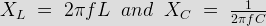
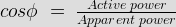
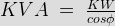

Power Factor Improvement
Need for Power Factor Improvement
Methods of Power Factor Improvement
Power Factor Calculation
Electrical Power Factor
In general power is the capacity to do work. In electrical domain, electrical power is the amount of electrical energy that can be transferred to some other form (heat, light etc) per unit time. Mathematically it is the product of voltage drop across the element and electric current flowing through it.
Considering first the DC circuits, having only DC voltage sources, the inductors and capacitors behave as short circuit and open circuit respectively in steady state. Hence the entire circuit behaves as resistive circuit and the entire electrical power is dissipated in the form of heat. Here the voltage and electric current are in same phase and the total electrical power is given by
Electrical power = Voltage across the element X Current through the element.
Its unit is Watt = Joule/sec.
Now coming to AC circuits, here both inductor and capacitor offer certain amount of impedance given by,

The inductor stores electrical energy in the form of magnetic energy and capacitor stores electrical energy in the form of electrostatic energy. Neither of them dissipates it. Further there is a phase shift of 90-°between voltage and electric current. Hence when we consider the entire circuit consisting of resistor, inductor and capacitor, there exists some phase difference between the source voltage and current. The cosine of this phase difference is called electrical power factor.
This factor (0 < cosφ < 1 ) represents the fraction of total power that is used to do the useful work.
The other fraction of electrical power is stored in the form of magnetic energy or electrostatic energy in inductor and capacitor respectively.
The total power in this case is,
Total electrical power = Voltage across the element X electric current through the element
This is called apparent power and its unit is VA (Volt Amp) and denoted by ‘S’.
A fraction of this total electrical power which actually does our useful work is called as active power. It is denoted as ‘P’.
P = Active power = Total electrical power.cosφ and its unit is watt.
The other fraction of power is called reactive power. This does no useful work, but it is required for the active work to be done. It is denoted by ‘Q’ and mathematically is given by,
Q = Reactive power = Total electrical power.sinφ and its unit is VAR (Volt Amp Reactive).
This reactive power oscillates between source and load.
To help understand this better all these power are represented in the form of triangle.
Power Factor Triangle
Mathematically, S2 = P2 + Q2 and electrical power factor is active power / apparent power.
Power Factor Improvement
The term power factor comes into picture in AC circuits only. Mathematically it is cosine of the phase difference between source voltage and current. It refers to the fraction of total power (apparent power) which is utilized to do the useful work called active power.

Need for Power Factor Improvement
• Real power is given by P = VIcosφ. To transfer a given amount of power at certain voltage, the electrical electric current is inversely proportional to cosφ. Hence higher the pf lower will be the electric current flowing. A small electric current flow requires less cross sectional area of conductor and thus it saves conductor and money.
• From above relation we saw having poor power factor increases the electric current flowing in conductor and thus copper loss increases. Further large voltage drop occurs in alternator, electrical transformer and transmission & distribution lines which gives very poor voltage regulation.
• Further the KVA rating of machines is also reduced by having higher power factor as,

Hence, the size and cost of machine also reduced. So, electrical power factor should be maintained close to unity.
Methods of Power Factor Improvement
• Capacitors: Improving power factor means reducing the phase difference between voltage and current. Since majority of loads are of inductive nature, they require some amount of reactive power for them to function. This reactive power is provided by the capacitor or bank of capacitors installed parallel to the load. They act as a source of local reactive power and thus less reactive power flows through the line. Basically they reduces the phase difference between the voltage and current.
• Synchronous condenser: They are 3 phase synchronous motor with no load attached to its shaft. The synchronous motor has the characteristics of operating under any power factor leading, lagging or unity depending upon the excitation. For inductive loads, synchronous condenser is connected towards load side and is overexcited. This makes it behave like a capacitor. It draws the lagging electric current from the supply or supplies the reactive power.
• Phase advancer: This is an ac exciter mainly used to improve pf of induction motor. They are mounted on shaft of the motor and is connected in the rotor circuit of the motor. It improves the power factor by providing the exciting ampere turns to produce required flux at slip frequency. Further if ampere turns are increased, it can be made to operate at leading power factor.
Power Factor Calculation
In power factor calculation, we measure the source voltage and electric current drawn using a voltmeter and ammeter respectively. A wattmeter is used to get the active power.
Now, we know P = VIcosφ watt

Hence we can get the electrical power factor.
Now we can calculate the reactive power Q = VIsinφ VAR
This reactive power can now be supplied from the capacitor installed in parallel with load in local. Value of capacitor is calculated as per following formula:

IMPORTANT: In power factor improvement, the reactive power requirement by the load does not change. It is just supplied by some device in local, thus reducing the burden on source to provide the required reactive power.
 by
by {kind=link}